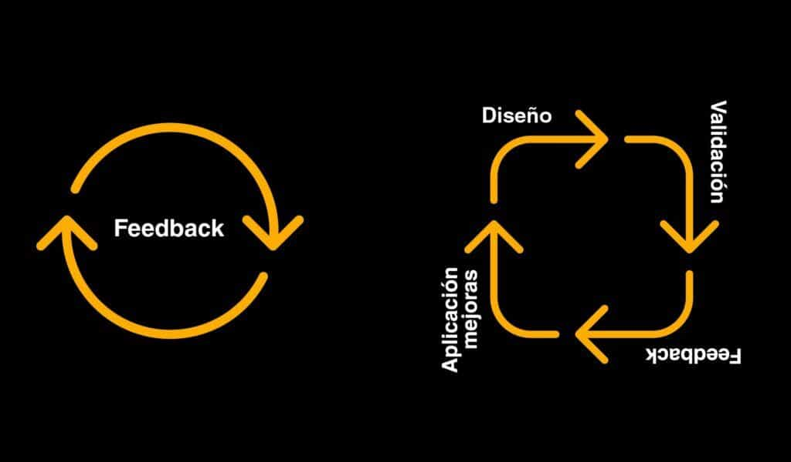

DISEÑO DE INTERACCIÓN IxD
Imagina que es de noche y tienes hambre, mucha hambre. Abres tu app de comida favorita, buscas esa hamburguesa que se te ha estado antojando toda la semana y tocas el botón que dice "Agregar". Y entonces, en menos de tres segundos, algo pasa: la pantalla cambia, aparece un resumen, un cargo, una confirmación. "Tu pedido ha sido realizado".
¿Qué? ¿Ya pagaste? ¿Cuándo decidiste eso? No tocaste "Pagar". Tocaste "Agregar". Pero el sistema entendió algo que tú no dijiste. Y ahora tienes una hamburguesa en camino y falta dinero en tu cuenta de banco. Detente un momento. No sigas leyendo todavía. Piensa en lo que acaba de pasar en esa historia.
¿Qué es el IxD?
No fue un error tuyo. No fue mala suerte. Fue una conversación mal escrita. Toda pantalla es un diálogo. Tú dices algo (un clic, un desliz, una palabra) y el sistema responde con una animación, una vibración, una confirmación. Una y otra vez, cientos de veces al día, sin que lo notemos. Cuando esa conversación fluye, la app "simplemente funciona". Cuando se rompe, sentimos confusión, frustración… o pagamos algo que no pedimos.
El diseño de interacción es quien escribe esas conversaciones. Decide qué pasa cuando tocas, deslizas o escribes, cómo responde el sistema, y cómo se recupera cuando algo sale mal.

¿Para qué sirve el IxD?
El diseño de interacción sirve para que puedas hacer lo que quieres sin tener que adivinar cómo funciona una pantalla. Para que “Agregar” agregue, “Pagar” te pida confirmar y un error tenga una salida clara. El IxD te ayuda a saber qué está pasando, qué puedes hacer después y cómo volver atrás. Así, cada respuesta del sistema reduce la confusión y te permite avanzar con confianza, manteniendo el control de tus decisiones.
Recursos adicionales
Pero, ¿qué hace un profesional del Diseño de Interacción? En el siguiente video podrás descubrir todas las posibilidades que hay para desarrollarte en el medio.